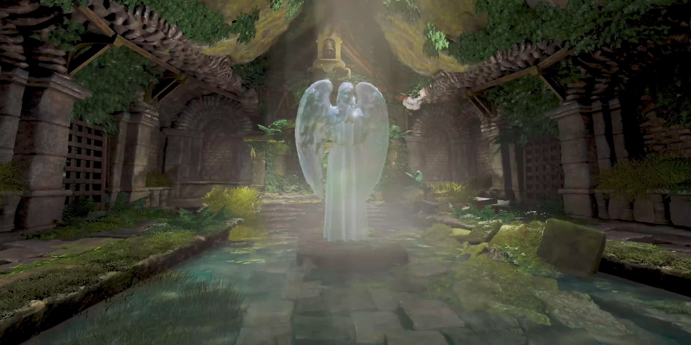

Stone Speech
Temple of the Light Gap
Click me · Watch the project film ↗
The starting point of this project is my long-time admiration for video game creator Fumito Ueda and works such as ICO, Shadow of the Colossus, and The Last Guardian. This piece draws inspiration from the ruin temple in The Last Guardian; rather than replicating its style, my goal was to create a fresh expression through technical reconstruction and conceptual refinement.